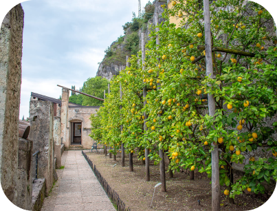
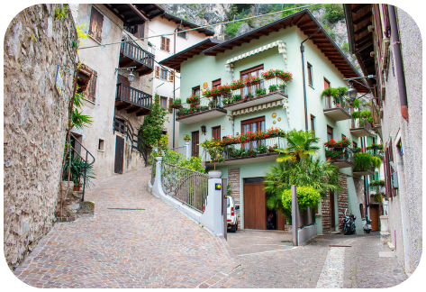

Лимоне-суль-Гарда
Этот живописный
городок расположен на
северо-западном берегу
озера Гарда. Нависающие
громадные скалы, синева
озера, домики,
украшенные символом
города — лимонами, —
всё это выделяет этот
небольшой, но
атмосферный городок
среди других.
Отзывы
Кроме своей живописности, озеро славится
оздоровительным климатом, термальными
источниками и атмосферой гармонии и
спокойствия. Все для того, чтобы отдохнуть душой.
Цитрусовое название города вполне оправдано:
дома украшены лимонами, пьют здесь лимончелло.
Делать тут особо нечего, да и не надо.
Просто расслабляемся и получаем удовольствие.
Цитрусовые сады
Римский переулок
Полезные ссылки
для путешествия